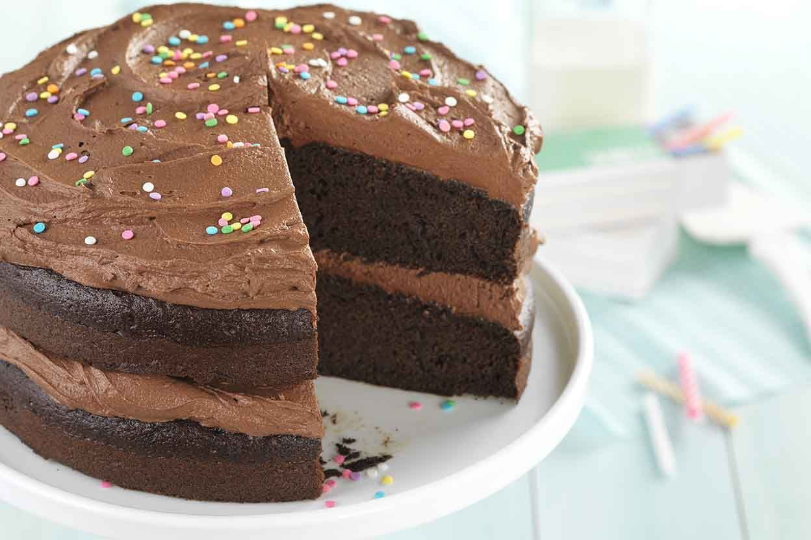

Gluten-Free Chocolate Cake Recipe!
Ingredients
- 2 cups gluten-free flour mix
- 1 3/4 cups granulated sugar
- 3/4 cup unsweetened cocoa powder
- 1 1/2 tsp baking powder
- 1 1/2 tsp baking soda
- 1 tsp salt
- 2 large eggs
- 1 cup buttermilk
- 1/2 cup vegetable oil
- 2 tsp pure vanilla extract
- 1 cup hot water
Instructions
- Preheat your oven to 350°F (175°C). Grease and flour two 9-inch round cake pans.
- In a large mixing bowl, sift together gluten-free flour, sugar, cocoa powder, baking powder, baking soda, and salt.
- Add eggs, buttermilk, vegetable oil, and vanilla extract. Mix until well combined.
- Stir in hot water until the batter is smooth. The batter will be thin; this is normal.
- Pour the batter evenly into the prepared pans.
- Bake for 30 to 35 minutes or until a toothpick inserted into the center comes out clean.
- Allow the cakes to cool in the pans for 10 minutes, then remove from the pans and let them cool completely on a wire rack.
- Frost and decorate as desired. Enjoy your gluten-free chocolate cake!
